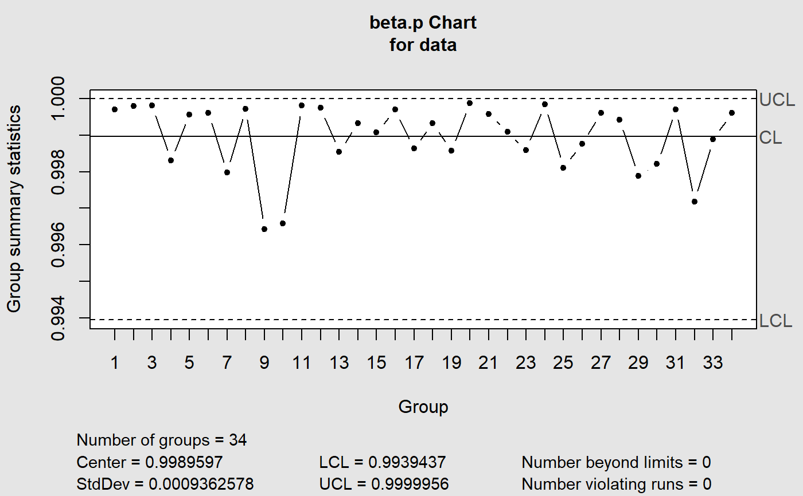

bcc.RdThe Beta Chart presents the control limits based on the Beta probability distribution. It was can be used for monitoring fraction data from Binomial distribution as replacement of the p-Charts. The Beta Chart was applied for monitoring the variables in three real studies, and it was compared to the control limits with three schemes. The comparative analysis showed that: (i) Beta approximation to the Binomial distribution was more appropriate with values confined in the [0, 1]- interval; and (ii) the charts proposed were more sensitive to the average run length (ARL), in both in-control and out-of-control processes monitoring. The Beta Charts outperform the Shewhart control charts analyzed for monitoring fraction data.This package was made based on the qcc package. See qcc.
bcc(data, type = c("1", "2"), sizes, center, std.dev, limits, data.name, labels, newdata, newsizes, newdata.name, newlabels, nsigmas = 3, confidence.level = 0.9, rules = shewhart.rules, plot = TRUE, ...)
| data | a data frame, a matrix or a vector containing observed data for the variable to chart. Each row of a data frame or a matrix, and each value of a vector, refers to a sample or ''rationale group''. |
|---|---|
| type | a character string specifying the group statistics to compute. There are two possible types: |
| sizes | a value or a vector of values specifying the sample sizes associated with each group. If data is continuous this parameter should be ignored |
| center | a value specifying the center of group statistics or the ''target'' value of the process. |
| std.dev | a value or an available method specifying the within-group standard deviation(s) of the process. |
| limits | a two-values vector specifying control limits. |
| data.name | a string specifying the name of the variable which appears on the plots. If not provided is taken from the object given as data. |
| labels | a character vector of labels for each group. |
| newdata | a data frame, matrix or vector, as for the |
| newsizes | a vector as for the |
| newdata.name | a string specifying the name of the variable which appears on the plots. If not provided is taken from the object given as newdata. |
| newlabels | a character vector of labels for each new group defined in the argument |
| nsigmas | a numeric value specifying the number of sigmas to use for computing control limits. It is ignored when the |
| confidence.level | a numeric value between 0 and 1 specifying the confidence level of the computed probability limits. |
| rules | a value or a vector of values specifying the rules to apply to the chart. See shewhart.rules for possible values and their meaning. |
| plot | logical. If |
| ... | further arguments are ignored. |
SANT'ANNA, Ângelo M. O; CATEN, Carla Schwengber ten. Beta control charts forsave monitoring fraction data. Expert Systems With Applications, p. 10236-10243. 1 set. 2012.
Scrucca, L. (2004). qcc: an R package for quality control charting and statistical process control. R News 4/1, 11-17.
#> List of 11 #> $ call : language qcc(data = data, type = "beta.p", center = center, std.dev = std.dev, limits = limits, data.name = data.name| __truncated__ ... #> $ type : chr "beta.p" #> $ data.name : chr "data" #> $ data : num [1:34, 1] 1 1 1 0.998 1 ... #> ..- attr(*, "dimnames")=List of 2 #> $ statistics : Named num [1:34] 1 1 1 0.998 1 ... #> ..- attr(*, "names")= chr [1:34] "1" "2" "3" "4" ... #> $ sizes : int [1:34] 1 1 1 1 1 1 1 1 1 1 ... #> $ center : num 0.999 #> $ std.dev : num 0.000936 #> $ confidence.level: num 0.9 #> $ limits : num [1, 1:2] 0.994 1 #> ..- attr(*, "dimnames")=List of 2 #> $ violations :List of 2 #> - attr(*, "class")= chr "qcc"